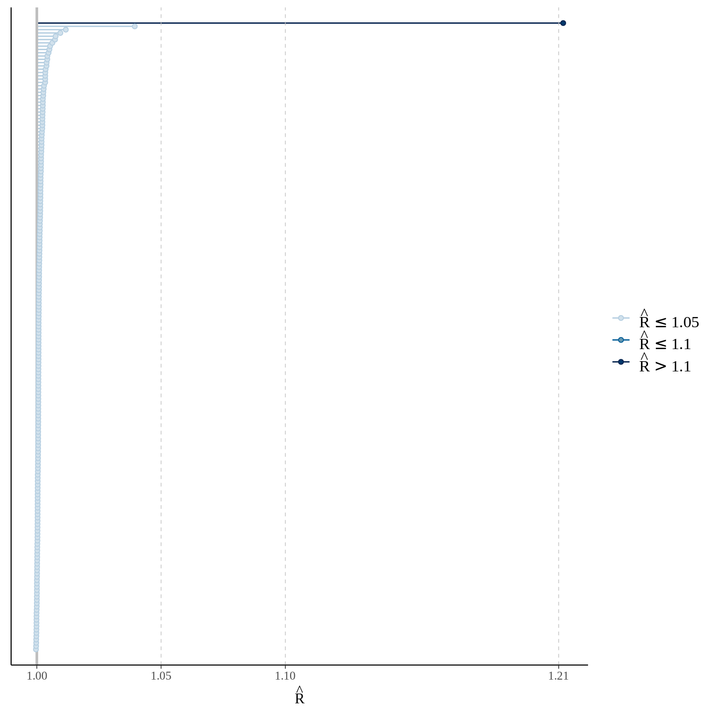
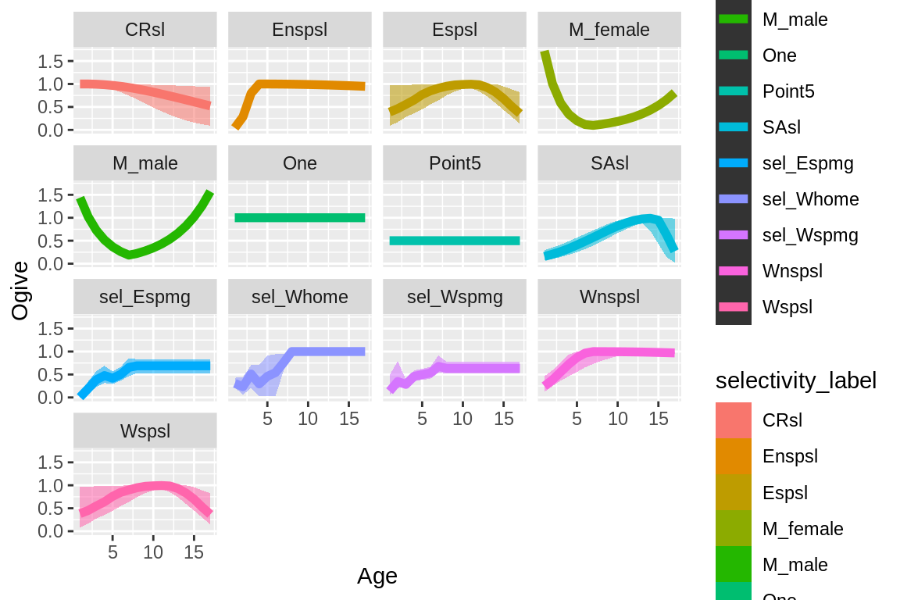

Chapter 6 MCMC
Casal2 MCMC estimation for a single model should be done using “multiple chains”. A chain in this case is a seperate MCMC run, ideally starting from a different set of starting locations and with a different seed number. It is advised to create at least three chains per model. Most of the MCMC diagnostics in this package are designed for multiple chains. These include calculating Rhats (within and between chain variation in parameters) (Vehtari et al. 2021) and effective sample sizes which is a measure of effeciency in your mcmc sampler.
6.1 Read in models
## extra packages
library(purrr)
library(bayesplot)
cas2_file_dir = system.file("extdata", "multi_chain_mcmc", package = "r4Casal2", mustWork = TRUE)
mcmc_1 = extract.mcmc(path = cas2_file_dir, samples.file = "samples.4", objectives.file = "objectives.4")
mcmc_2 = extract.mcmc(path = cas2_file_dir, samples.file = "samples.5", objectives.file = "objectives.5")
mcmc_3 = extract.mcmc(path = cas2_file_dir, samples.file = "samples.6", objectives.file = "objectives.6")
## assign chain label
mcmc_1$chain = "1"
mcmc_2$chain = "2"
mcmc_3$chain = "3"
## Remove Burnin
mcmc_post_1 = mcmc_1 %>% filter(state == "mcmc")
mcmc_post_2 = mcmc_2 %>% filter(state == "mcmc")
mcmc_post_3 = mcmc_3 %>% filter(state == "mcmc")
## combine
mcmc_all = rbind(mcmc_1, mcmc_2, mcmc_3)
mcmc_non_burn_in = mcmc_all %>% filter(state == "mcmc")
n_posterior_samples = nrow(mcmc_post_1) + nrow(mcmc_post_2) + nrow(mcmc_post_3)
## do some modifying so we have just parameters available
## TODO: change parameter labels so they are not so large and easier to read on figures
pars = colnames(mcmc_post_1[,12:(ncol(mcmc_non_burn_in) - 1)])
iters = max(nrow(mcmc_post_1), nrow(mcmc_post_2), nrow(mcmc_post_3))
bayes_array = array(dim = c(iters, 3, length(pars)), dimnames = list(1:iters, 1:3, pars))
bayes_array[1:nrow(mcmc_post_1),1,] = as.matrix(mcmc_post_1[,12:(ncol(mcmc_non_burn_in) - 1)])
bayes_array[1:nrow(mcmc_post_2),2,] = as.matrix(mcmc_post_2[,12:(ncol(mcmc_non_burn_in) - 1)])
bayes_array[1:nrow(mcmc_post_3),3,] = as.matrix(mcmc_post_3[,12:(ncol(mcmc_non_burn_in) - 1)])
## cut off at min
min_cutoff = min(nrow(mcmc_post_1), nrow(mcmc_post_2), nrow(mcmc_post_3))
bayes_array = bayes_array[1:min_cutoff, ,]6.2 Diagnostics
## get Rhats
rhats = apply(bayes_array, MARGIN = 3, Rhat)
## get effective sample sizes
n_eff_bulk = apply(bayes_array, MARGIN = 3, ess_bulk)
n_eff_tail = apply(bayes_array, MARGIN = 3, ess_tail)
## TODO: need to think about what is a good general rule of thumb.
## I was thinking you would want n_eff of at least 200.The Rhat function produces R-hat convergence diagnostic, which compares the between- and within-chain estimates for model parameters and other univariate quantities of interest. Chains that have not mixed well (i.e., the between-and within-chain estimates don’t agree) will result in R-hat larger than 1.1. The ess_bulk function produces an estimated Bulk Effective Sample Size (bulk-ESS) using rank normalized draws. Bulk-ESS is useful measure for sampling efficiency in the bulk of the distribution (related e.g. to efficiency of mean and median estimates), and is well defined even if the chains do not have finite mean or variance. The ess_tail function produces an estimated Tail Effective Sample Size (tail-ESS) by computing the minimum of effective sample sizes for 5% and 95% quantiles. Tail-ESS is useful measure for sampling efficiency in the tails of the distribution (related e.g. to efficiency of variance and tail quantile estimates).
Once you have calculated these quantities you can use bayesplot plotting functions. Need to work on changing parameter labels from the Casal2 model. They make some of these plots difficult to read
mcmc_rhat(rhats)## Warning: Dropped 6 NAs from 'new_rhat(rhat)'.
#mcmc_neff(n_eff_bulk)
#mcmc_neff(n_eff_tail)6.3 Plotting quantities
## This function helps create 95% CIs for quantities
p <- c(0.025, 0.5, 0.975) ## confidence intervals
p_names <- map_chr(p, ~paste0(.x*100, "%"))
p_funs <- map(p, ~partial(quantile, probs = .x, na.rm = TRUE)) %>%
rlang::set_names(nm = c("low", "mid", "upp"))
#p_funs
## Bring in derived quantities
cas2_file_name = system.file("extdata", "tabular.log", package = "r4Casal2", mustWork = TRUE)
cas2_tab = extract.tabular(file = cas2_file_name, quiet = T)
## cut off burn-in the first 50 samples
cas2_tab = burn.in.tabular(cas2_tab, Row = 50)6.3.1 selectivities
selectivity_df = get_selectivities(cas2_tab)
quantile_selectivity_df = selectivity_df %>%
group_by(bin, selectivity_label) %>%
summarize_at(vars(selectivity), p_funs)
ggplot(quantile_selectivity_df, aes(x = bin)) +
geom_ribbon(aes(ymax = low, ymin = upp, alpha = 0.5, col = selectivity_label, fill = selectivity_label), lwd=0) +
geom_line(aes(y = mid, col = selectivity_label, group = selectivity_label), size =2, alpha = 1) +
facet_wrap(~selectivity_label) +
labs(x = "Age", y = "Ogive", col = "Model", linetype = "Model")
6.3.2 Derived quantities
# plot Ssbs
ssbs = get_derived_quanitites(model = cas2_tab)## getting values for SSB_E
## getting values for SSB_W#ssbs_mpd = get_derived_quanitites(model = mpd)
#head(ssbs)
#ssbs_mpd$years = as.numeric(ssbs_mpd$years)
ssbs$years[ssbs$years == "initialisation_phase_1"] = 1971
quantile_ssb_df = ssbs %>%
group_by(years, dq_label) %>%
summarize_at(vars(values), p_funs)
quantile_ssb_df$years = as.numeric(quantile_ssb_df$years)
##
quant_ssb_plot = ggplot(quantile_ssb_df, aes(x = years)) +
geom_ribbon(aes(ymax = low, ymin = upp, alpha = 0.5, col = dq_label, fill = dq_label), lwd=0) +
theme_bw() +
geom_line(aes(y = mid, col = dq_label, group = dq_label), size =2, alpha = 1) +
xlab("Years") +
ylab("SSB") +
ylim(0, 2500000) +
xlim(1970, 2020) +
scale_alpha(guide = 'none') +
#geom_line(data = ssbs_mpd, aes(x = years, y = values), inherit.aes = F, col = "black", size = 1.5) +
facet_wrap(~dq_label)
quant_ssb_plot